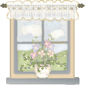

Hello! I'm Skye! I'm an computer science and visual arts enthusiast from a tiny town in the middle of the montains, the venezuelan andean region, now living in a beautiful house by the rural areas to study at my new school. I am fluent in both Spanish and English.Currently I'm also studying foreign languages, like French and Italian. I lived seven years of my life in the United States and studied there!My life is kinda boring if you think about it, my days are mostly spent drawing, coding, taking walks, indulging in the occassional hobby like cooking, and spending time with my besties or family! I really enjoy it. I draw all sorts of things and work in all kinds of mediums, like pixel art, though I have a fondness for watercolor since i was a child, when I studied arts with my nana, who in fact, used to paint a lot of gorgeous paintings with acrylic and oil! She also introduced me to the music world, and that's how I starting loving old artists. ^^
My passion for cooking is also a part of my life. My mother studied national and international gastronomy, so I grew up tasting her dishes and fell in love with it. I have a sweet tooth and I'm fascinated by desserts! If you ever meet me, you should know that I love cheesecake, and my favorite drinks are bubble tea and, of course, a very local drink from my region! chicha and aguapanela (I'm not sure if this one is also Colombian, but at least my grandma drinks it a lot too!). But yeah, I love aguapanela very much. A LOT.
I have a passion for all things cute and kitschy  , but also for all kind of aesthetics. I love decorating my everyday items and personal space to be as cute and personalized as possible! I love a lot of different styles, like Coastal Style, also known as Style Bord de Mer in French, which is an interior design aesthetic that evokes the feeling of being by the sea. I also enjoy fashion and design a lot. But you could probably infer this about me if you took one look at my website and the details, huh?
, but also for all kind of aesthetics. I love decorating my everyday items and personal space to be as cute and personalized as possible! I love a lot of different styles, like Coastal Style, also known as Style Bord de Mer in French, which is an interior design aesthetic that evokes the feeling of being by the sea. I also enjoy fashion and design a lot. But you could probably infer this about me if you took one look at my website and the details, huh?
I also love animals! I currenly have two tortoiseshell cats, who are my best friends and companions. One is a big chubby and fluffy hairlong baby, and she has the most adorable little face and big eyes. I adopted her when she was 3 months old, and she has been with me ever since. She is very playful and curious, and she loves to explore her surroundings. She also loves to cuddle and be petted, and she always makes me feel better when I'm feeling down. The other one is her little sister, Dawn!
Maybe some of you guys already know, but yeah, I go by she/they pronouns though at the end of the day you can call me whatever, I don't mind. I'm interested in web development and web design but also game development! I love taking pictures of everything btw! I have a polaroid camera that I use sometimes . I like to collect important memories of everything... places, food, my friends, my family, you know. I think there's just something special about the moment where the people you love are living their lives with you. You can almost feel the warm of their hearts by your side. 
Anyways! I used to have a telescope a few years back in the US, my mom gave to me when I was a kid. I loved stargazing and learning about the constellations. The sky was so clear because we were living in the middle of the woods. It was such a magical experience to look up at the night sky and see all the stars twinkling above me.
My favorite season is autumn, when the air turns crisp and the leaves change color. I love the cozy feeling of wrapping myself in a warm sweater and sipping on a hot cup of tea while watching the leaves fall from the trees. Autumn is also a time for harvest, and I enjoy going to farmers' markets to pick out fresh produce and bake seasonal treats like pumpkin bread and apple pie. The colors, smells, and tastes of autumn always make me feel happy and content.
I also love the winter season, especially around the holidays. There's something magical about the twinkling lights, festive decorations, and the warmth of spending time with loved ones. I enjoy the holiday treats, watching classic movies, and listening to my favorite seasonal music. The cold weather also gives me an excuse to snuggle up in a cozy blanket and drink hot cocoa. Overall, winter is a time for joy, reflection, and gratitude.